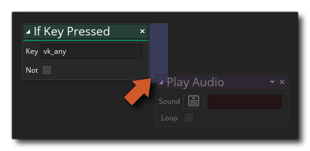
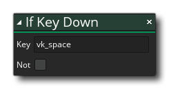

Beschreibung
Mit dieser Aktion können Sie die Tastatur abfragen, um zu sehen, ob gerade eine Taste gedrückt wird. Die Aktion wird zurückkehren true bei jedem Schritt, an dem die Tastatur gedrückt wird, oder false Andernfalls, wenn Sie auf klicken not Mit dem Modifikator können Sie dann prüfen, ob der Schlüssel keine Hilfe ist, dh: Die Aktion wird zurückgegeben true solange keine Taste gedrückt ist und false Wenn da ist. Wenn Sie nur nach einem einzelnen Tastendruck suchen müssen, verwenden Sie die Aktion Wenn die Taste gedrückt wird.
Beachten Sie, dass zum Hinzufügen von Aktionen zum "Wenn" -Block diese neben der Aktion abgelegt werden sollen, wie in der folgenden Abbildung dargestellt:
 Alle an anderer Stelle abgelegten Aktionen werden nach dem "Wenn" -Block ausgeführt.
Aktionssyntax:
Argumente:
Streit Beschreibung Key Der Name der zu überprüfenden Tastaturtaste. Not Negiere die Prüfung (wahr wird falsch und umgekehrt)
Beispiel:

Der obige Aktionsblockcode fragt den Tastaturstatus bei jedem Schritt ab. Wenn eine Taste gedrückt gehalten wird, prüft sie, ob die Taste zuerst gedrückt wird. Wenn die Prüfung ist true Beim ersten Herunterdrücken wird ein Ton abgespielt. Während die Taste gedrückt gehalten wird, ändert sich die Sprite-Mischung in Rot. Wenn die Taste nicht gedrückt gehalten wird, wird die Tastenfreigabe überprüft, um die Mischfarbe auf Weiß zurückzusetzen.